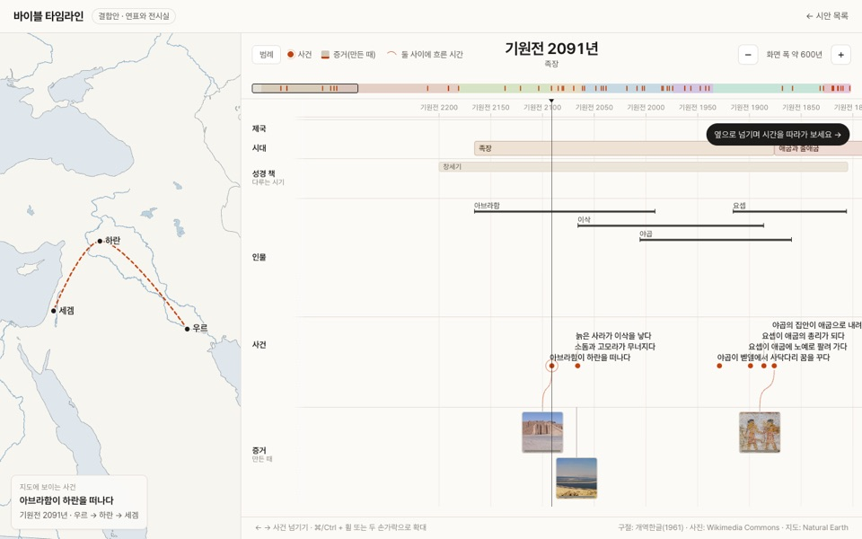
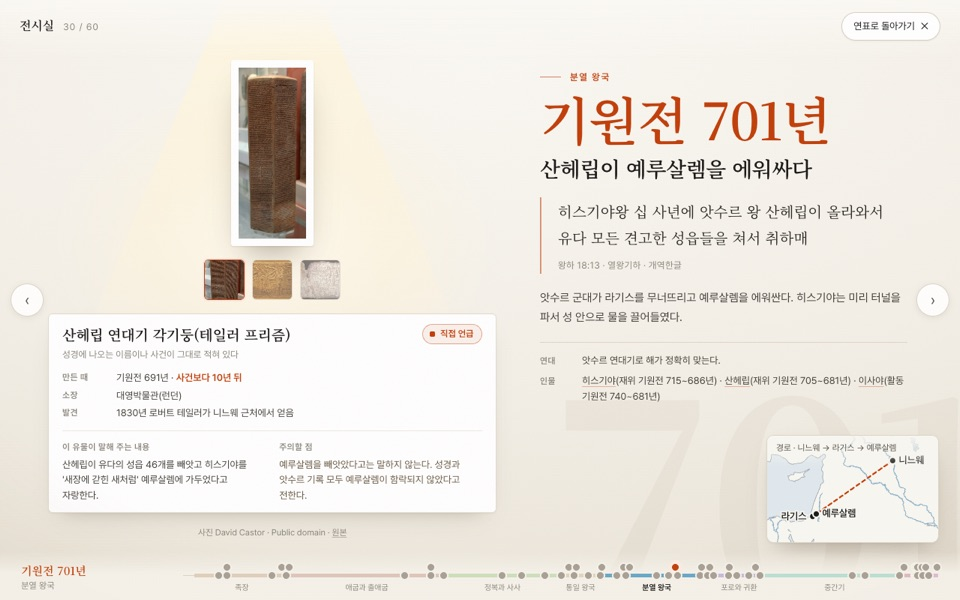

바이블 타임라인
성경 속 책, 인물, 사건, 구절, 지도, 그리고 그 사건을 뒷받침하는 실제 유물 사진을 한 줄 위에 놓고 옆으로 넘기며 봅니다.
시안 C의 연표에 밝게 바꾼 시안 B의 전시실을 섞은 결합안을 다듬는 단계입니다

고른 방향 · 결합안
연표와 전시실
왼쪽은 지도, 오른쪽은 실제 햇수 비율의 연표입니다. 연표에는 제국, 시대, 책, 인물, 사건, 유물 사진을 나란히 놓고 옆으로 넘깁니다. 사건이나 유물을 누르면 밝은 전시실이, 인물을 누르면 인물 프로필이 열립니다.
- 연표에서
- 같은 시대를 산 인물과, 유물이 사건보다 몇 년 뒤에 만들어졌는지를 선으로 봅니다.
- 전시실에서
- 유물 하나에 조명을 비추고 구절, 지도, 주의할 점을 함께 봅니다. 옆으로 넘기면 뒤쪽 연표도 같은 사건으로 따라옵니다.
- 인물 프로필
- 가문과 가족, 생애, 핵심 구절, 성경 밖 기록을 한 화면에 모았습니다. 장절을 누르면 개역한글 본문이 뜹니다.
대표 사건 60개 · 인물 52명 · 유물과 장소 사진 48장 · 구절은 모두 개역한글
열어 보기 →비교했던 시안
시안 A
두루마리
양피지 두루마리를 옆으로 펼치듯 사건이 한 줄 위에 이어집니다. 사건을 누르면 아래에서 구절·지도·유물 패널이 올라옵니다.
- 좋은 점
- 사건이 고르게 놓여 한눈에 훑기 쉽습니다. 성경 책을 읽는 느낌과 가깝습니다.
- 약한 점
- 사건 사이 간격이 실제 햇수와 달라, 아래 띠로 실제 비율을 따로 보여 줘야 합니다.
시안 B
박물관 회랑
어두운 전시실을 한 칸씩 걷습니다. 칸마다 유물 하나에 조명이 비치고, 옆에 구절과 사건 설명이 붙습니다.
- 좋은 점
- 유물 사진이 주인공이라 '실제 증거'라는 사이트의 특징이 가장 크게 드러납니다.
- 약한 점
- 한 화면에 사건 하나만 보여서, 시대 흐름을 한눈에 보기는 어렵습니다.
시안 C
동시대 차선
실제 햇수 비율의 시간축 위에 제국, 시대, 책, 인물, 사건, 유물을 줄마다 나란히 놓고, 위쪽 지도가 지금 보는 해를 따라 움직입니다.
- 좋은 점
- 누가 누구와 같은 시대를 살았는지, 유물이 사건보다 몇 년 뒤에 만들어졌는지가 선으로 보입니다.
- 약한 점
- 정보가 많아 처음 보는 사람에게는 복잡하고, 휴대폰에서는 줄이 빽빽합니다.
세 시안에 똑같이 들어간 내용
- 아브라함부터 바울까지 사건 11개와, 사건을 뒷받침하는 유물 사진 14장
- 구절은 개역한글(1961년에 나온 한국어 성경 번역본으로, 저작권 보호 기간이 끝나 누구나 쓸 수 있음)에서 그대로 옮겼습니다.
- 유물마다 증거 강도(유물이 성경 속 이름이나 사건을 얼마나 직접 말하는지 네 단계로 나눈 표시)와 주의할 점을 붙였습니다. 직접 언급, 간접 증거, 배경, 옛 사본으로 나눕니다.
- 연도는 전통 연대(성경에 적힌 햇수를 거슬러 더해 구한 연도)를 기본으로 두고, 학계에서 다르게 보는 연도를 사건마다 함께 적었습니다.